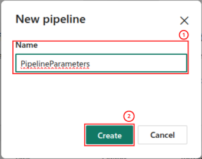
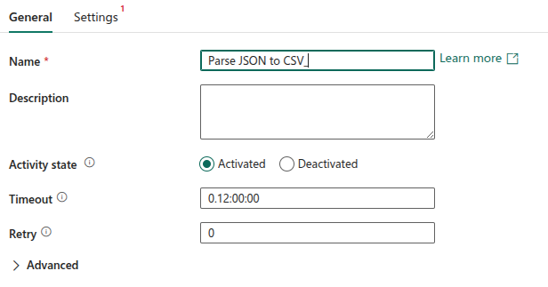
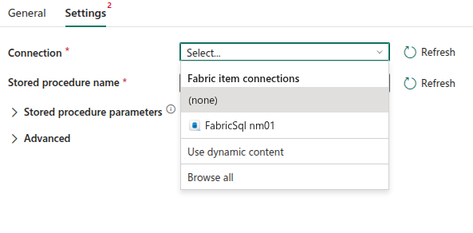
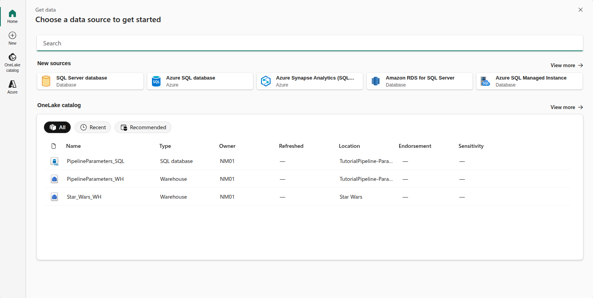

Mise en place de pipeline de données dynamiques
Parameters dans un flux Data Factory
Niveau DébutantObjectifs du tutoriel
Pourquoi paramétriser les Pipelines de données ?
Les pipelines de données dans Microsoft Fabric permettent d'orchestrer des flux de travail complexes : extraction, transformation et chargement de données depuis diverses sources.
Afin qu'un un pipeline soit véritablement dynamique et donc réutilisable, il n'est pas suffisant de configurer des valeurs fixes en dur dans la définition du pipeline.
Et c'est là qu'interviennent les paramètres. En effet, ils permettent de rendre les pipelines dynamiques et modulaires sans toucher à la logique sous-jacente.
Dans ce tutoriel, nous allons apprendre à :
- Créer et configurer des paramètres dans un pipeline Fabric
- Les utiliser dans vos activités (Copy Data, Dataflow, Notebook, etc.)
- Transmettre des valeurs dynamiquement lors de l'exécution
- Appliquer les bonnes pratiques pour maintenir des pipelines clairs et évolutifs
À la fin, vous disposerez des bases pour construire des pipelines modulaires, faciles à maintenir et prêts pour la production.
Scénario
Pour illustrer l'utilisation des paramètres dans un pipeline ETL de données paramétré , nous allons suivre le scénario suivant :
- Créer un pipeline de données paramétré
- Extrait des données depuis une API RESTful externe ([REST Countries](https://restcountries.com/))
- Transforme ces données avec un notebook Spark
- Charge les données transformées dans une table SQL
Le paramètre permettra d'exécuter le pipeline avec différents noms de pays.
Avant de commencer l'implémentation du pipeline ETL paramétré, nous allons mettre en place l'infrastructure nécessaire à la réalisation de ce tutoriel :
- Nous procéderons d'abord à la création d'un Workspace dédié dans Microsoft Fabric, qui servira de conteneur pour l'ensemble de nos ressources et garantira une isolation propre de notre projet.
- À l'intérieur de cet espace de travail, nous créerons ensuite un Lakehouse qui jouera un rôle central dans notre architecture : il accueillera à la fois les fichiers bruts extraits depuis l'API externe (dans le répertoire Files/raw/clients/) et les données transformées issues du notebook Spark (dans Files/transformed/clients/).
- Enfin, nous mettrons en place une base de données SQL (via l'endpoint SQL du lakehouse) qui contiendra notre table de destination clients_final ainsi que la procédure stockée usp_Charger_Clients responsable du chargement final des données.
L'ensemble de ces éléments constitue l'écosystème technique indispensable pour illustrer concrètement chacune des étapes de notre tutoriel, depuis l'extraction paramétrée jusqu'au chargement final en passant par les transformations.
Création d'un Workspace
La première étape de notre mise en œuvre consiste à créer un workspace dédié dans Microsoft Fabric, qui servira de conteneur centralisé pour l'ensemble des ressources de notre projet ETL.
Pour cela, commencer par vous conecter au portail Microsoft Fabric avec nos identifiants puis suivre les étapes suivantes :
- Cliquer sur Home depuis la volet gauche de l'interface de Microsoft Fabric
- Sélectionner le bouton + New Workspace
- Depuis le fenêtre de configuration qui s'ouvre, attribuer un nom pour ce nouveau Workspace dans le champ Name . Ici nous allons nommer notre Workspace TutorialPipelineParameters.
- Entrer une description pertinente afin de documenter l'objectif de cet environnement dans le champ Description [Optionnel]
- Cliquer sur le bouton Apply pour valider la création du Workspace

Création d'un Lakehouse
Après la création de notre Workspace, nous allons voir comment créer un Lakehouse de données pour stocker les différents fichiers qui seront manipuler dans ce tutorial. Depuis l'interface de notre Workspace, suivre les étape suivante :
- Cliquer sur le bouton + New item
- Depuis le volet droit qui s'ouvre, taper le terme "*Lakehouse*" dans le champ de recherche
- Sélectionner Lakehouse dans la liste des éléments disponibles.

Cela va ouvrir une fenêtre de configuration depuis laquelle nous allons pouvoir renseigner le nom du Lakehouse à créer en suivant les étapes suivantes :
- Entrer un nom explicite de votre choix dans le champ Name
- Depuis le champ Location, s'assurer sur ce Lakehouse est bien positionner dans le Workspace que nous avons créé.
- Cliquer sur le bouton Create pour valider la création de ce Lakehouse

Création d'une base SQL Database
Pour finaliser la mise en place de notre infrastructure, nous allons maintenant créer une SQL Database qui hébergera notre table de destination final ainsi que la procédure stockée servant à insérer les donnes dans la table.
Depuis le Workspace qui a été créé suivre les étapes suivantes :
- Cliquer sur le bouton + New item
- Dans le champ de recherche, taper le terme *SQL*
- Sélectionner l'option SQL Database dans la section Store data.

Une fenêtre de configuration New SQL database s'ouvre qui va permettre d'attribuer un nom significatif cette base de données SQL :
Cela va ouvrir une fenêtre et suivre les étapes suivantes :
- Entrer un nom pour cette nouvelle base de données dans le champ Name . Dans notre exemple, nous nommons cette base : SQL PipelineParameters_SQL.
- Cliquer sur le bouton Create pour valider la création de la base de données.

Création d'un Pipeline
Nous allons maintenant créer le **pipeline** qui orchestrera l'ensemble de notre flux ETL paramétré. Depuis notre Workspace `WS_Tutoriel_Ingestion_API`,
- Revenir dans l'interface du Workspace que nous avons créé précédemment
- Cliquer sur le bouton + New item
- Dans le volet droit qui s'ouvre, taper le terme Pipeline dans le champ de recherche
- Sélectionner "Pipeline" dans la section "Get data"

Cela va ouvrir la fenêtre qui va permettre de nommer ce Pipeline en suivant les étapes suivantes :
- 1. Depuis la fenêtre New Pipeline, entrer un nom de votre choix dans le champ Name . ici nous le nommons *PipelineParameters*
- 2. Cliquer sur le bouton Create pour valider la création de ce Pipeline .

Définition des Paramètres dans un Pipeline
Après avoir créé notre pipeline PL_Ingestion_Clients_API, nous allons maintenant configurer les paramètres qui le rendront dynamique et réutilisable pour différentes exécutions.
Pour accéder à cette fonctionnalité, depuis l'interface du Pipeline , suivre les étapes suivantes :
- 1. Cliquer sur le bouton Paramètres. Cela va ouvrir un volet droit sur la page.
- 2. Cliquer sur la croix x pour fermer ce volet droit
- 3. Redimensionner le menu du bas vers le haut

Dans le champ du bas du Pipeline , nous allons pouvoir inscrire les paramètres souhaités de la façon suivante :
- 1. Sélectionner l'onglet Parameters qui permet d'accéder à une interface dédiée à la gestion des paramètres.
- 2. Cliquer sur + New pour ajouter un paramètre et permettre de définir ses caractéristiques
- 3. Dans le champ Name , entrer un nom pour le paramètre. Ici le paramètre est nommé *name*.
- 4. Dans le champ Type, choisir le type souhaité pour ce paramètre. Ici le type de paramètre est choisi de type *String*.
- 5. Dans le champ Default value, définir une valeur par défaut si souhaité. Ici nous définissons *canada* comme valeur par défaut.

>Une fois nos paramètres créés, ils deviennent accessibles dans tout le pipeline via la syntaxe d'expression dynamique @pipeline().parameters.nom_du_parametre, que nous pourrons utiliser dans les configurations de nos activités Copy Data, Notebook et Procédure stockée. Cette approche paramétrée transforme notre pipeline en un modèle réutilisable capable de s'adapter à différentes dates d'exécution, différentes catégories de clients, ou même d'autres cas d'usage similaires sans avoir à dupliquer ou modifier la logique métier.
Utilisation des Paramètres dans une activité Copy data
Nous allons commencer par montrer comment utiliser un Paramètre du Pipeline de données dans un flux de données Copy data.
L'ajout d'une activité Copy data au Pipeline de données se fait de la façon suivante depuis l'interface du Pipeline :
- Depuis le menu, cliquer sur Add copy data activity ce qui va l'ajouter au canevas du Pipeline
- Dans les prochaines étapes, nous allons montrer comment définir les différents paramètres de cette activité depuis ce menu.

Activité Copy data : menu *General*
Depuis le menu General , définir les paramètres de la façon suivante :
- 1. Cliquer sur le menu General
- 1. Dans le champ Name , donner un nom à cette activité Copy data . Ici l'activité est nommée *Request Countries*

Activité Copy data : menu Source
Nous allons définir la source des données de cette activité Copy data .
Activité Copy data : menu Source - Paramètre Connection*
Pour commencer cette étape, nous allons définir le type de connexion :
- Sélectionner le menu Source
- Développer le menu déroulant du champ Connection
- Cliquer sur l'option Browse all

Cela va ouvrir la fenêtre Choose a data source to get started dans laquelle vous allez devoir réaliser les étapes suivantes :
- Dans le champ de recherche, taper le terme *http*
- Choisir l'option Htpp - Other dans le champ New sources

Cela va ouvrir la fenêtre Connect data source dans laquelle vous allez pouvoir définir les paramètres de cette connexion *htttp* en suivant les étapes suivantes :
- Renseigner l'adresse de l'API [Restcountries](https://restcountries.com/v3.1/name/) dans le champ Url.
- Cliquer sur le bouton Connect

Activité Copy data : menu *Source* - Paramètre *Relative URL*
Toujours depuis le menu Source, nous allons définir le paramétrages de l'appel à cette API. Pour cela, suivre les étapes suivantes :
- Cliquer dans le champ Relative URL
- Cliquer sur le lien Add dynamic content [Alt+Shift+D].

Cela va ouvrir la fenêtre Pipeline expression builder qui va permettre de construire le paramétrage dynamiquement en suivant les étapes suivantes :
- Choisir le menu Parameters ce qui va permettre d'afficher les paramètres définis dans le Pipeline de données
- Choisir le paramètre *name* que nous avons définis précédemment dans le Pipeline
- Dans la fenêtre, on voit s'afficher l'expression construite par ses actions. On retrouve ici l'appel du paramètre *name* : ```@pipeline().parameters.name```
- Cliquer sur le bouton OK pour fermer cette fenêtre.

Activité Copy data : menu Source - Paramètre File format
Enfin pour terminer, vous allez pouvoir le type de fichier qui sera téléchargé de la façon suivante :
- Depuis le champ File format, définir le type de fichier attendu. Ici, nous allons récupérer des fichier de type *JSON* depuis l'API [Rest Countries](https://restcountries.com/v3.1/name/).

Activité Copy data : menu *Destination*
Depuis le menu Destination, nous allons pouvoir l'endroit où stocker le fichier téléchargé de l'API.
Activité Copy data : menu *Destination* - Paramètre *Connection*
Pour choisir où stocker le fichier téléchargé, il va falloir commencer par choisir la *Lakehouse* que nous avons créé en suivant les étapes suivantes :
- Cliquer sur le menu Destination
- Développer le menu déroulant du champ Connection
- Cliquer sur l'option Browse all

Cela va ouvrir la fenêtre Choose a destination :
- Choisir le *Lakehouse* que nous avons créé précédemment

Activité Copy data : menu *Destination* - Paramètre *File path*
Nous allons poursuivre de la façon suivante :
- Dans le champ Root folder, choisir l'option Files
- Dans le champ File path, vous allez pouvoir définir le chemin de stockage du fichier. Inscrire le nom du répertoire souhaité dans le premier champ. Dans notre exemple, nous allons les stocker dans un répertoire nommé JSON.
- Sélectionner le deuxième champ depuis le champ File path.
- Cliquer sur le lien Add dynamic content [Alt+Shift+D].

Cela va ouvrir la fenêtre Pipeline expression builder qui va permettre de construire l'expression définissant le nom du fichier :
- Dans la fenêtre, nous allez pouvoir entrer l'expression suivante ```@concat(pipeline().parameters.name, '.json')```. LA fonction ```@concat()``` permet de concaténer des chaînes de caractères. Dans cette expression,nous réutilisons le paramètre défini dans le Pipeline comme nom du fichier avec une extension *JSON*.
- Cliquer sur le bouton OK pour fermer cette fenêtre.

Activité Copy data : menu *Destination* - Paramètre *File format*
Enfin il reste à définir le format de stockage des fichiers à télécharger :
- Depuis le champ File format, utiliser le menu déroulant et choisir JSON comme format de stockage

Utilisation des Paramètres dans un Notebook
A présent, nous allons voir comment mettre en place un notebook qui utilisera les paramètres définis dans un Pipeline Data Factory
Mise en place d'un Notebook - Python
Création du Notebook
La création d'un notebook peut se faire depuis l'interface du Workspace en suivant les étapes suivantes :
- Cliquer sur le bouton + New item
- Dans le volet droit, taper le terme notebook dans le champ de recherche
- Sélectionner l'icône Notebook pour en créer un.

Cela va ouvrir une fenêtre New Notebook permettant de nommer ce Notebook en suivant les étapes suivantes :
- Dans le champ Name , inscrire un nom de votre choix pour ce Notebook. Dans notre exemple, le Notebook est nommé *Parse Country JSON*
- S'assurer que ce Notebook est bien associé au Workspace que nous avons créé dans ce tutoriel.
- Cliquer sur le bouton Create pour finaliser la création de ce Notebook.

Association d'un Lakehouse
Ce notebook doit être associé à notre Workspace et va venir manipuler les fichiers qui sont stockés dans notre Lakehouse.
Pour cela, vous allez devoir suivre les étapes suivantes depuis l'interface du Notebook que nous venons de créer :
- Depuis le volet Explorer, cliquer sur le bouton Add data items
- Choisir l'option New lakehouse

Cela va ouvrir une fen^tre dans laquelle vous pourrez choisir les données à associer à ce Notebook.
- Choisir le Lakehouse que nous avons créé précédemment *PipelineParameters_LK*
- Cliquer sur le bouton Connect

Mise en place du code Python
Dans notre exemple, nous allons utiliser Python pour transformer les fichiers JSON que nous avons téléchargé précédemment avec l'activité Copy data. L'objectif est de lire un fichier JSON et en extraire les données qui seront stockés sous la forme de table dans des fichiers CSV.
Étant donné la faible volumétrie des données à manipuler, nous allons utiliser un kernel Python (par défaut les notebooks sont paramétré pour exécutés avec PySPark). Pour indiquer que nous souhaitons réaliser nos calculs depuis un kernel Python, vous allez devoir le faire de la façon suivante :
- Cliquer et choisir l'option Python

Afin de simplifier les propos et se focaliser sur le sujet principale de ce tutoriel, nous avons limiter ce Notebook à trois cellules.
- Import des librairies Python json et pandas
- Déclaration d'une variable de type string. Elle servira par la suite de pont avec la variable définie dans le Pipeline de données
- Réalisation du parsing du fichier JSON et enregistrement sous la forme de CSV du résultat

Définition d'un paramètre dans un Notebook
Pour pouvoir piloter la valuer d'un paramètre dans un notebook depuis le Pipeline , il vz falloir le préciser dans la configuration du pramaètre. Cela doit se faire depusi la cellule dans lequelle ce paramètre a été défini de la daçon suivante :
- Passer la pointeur de la souros dans le coi gaiche de la cdellule et cliquer sur les trois points
- Dans les options roposées, chosiir Toggle parameter cell

Mise en place d'une activité Notebook
Ajout d'une activité Notebook au Pipeline

Activité Notebook - Menu General

Activité Notebook - Menu Settings

Utilisation des Paramètres dans une Procédure Stockée
Mise en place des éléments nécessaires dans SQL Database
Création d'une table
Creation d'une procédure stockée
Mise en place d'une activité Stored procedure dans le Pipeline de Données
Ajout d'une activité Stored procedure au Pipeline

Activité Stored procedure - Menu General

Activité Stored procedure - Menu Settings



Conclusion
Les paramètres dans Microsoft Fabric offrent une flexibilité essentielle pour créer des pipelines de données robustes et réutilisables. En maîtrisant leur utilisation, vous pouvez :
- Centraliser la configuration
- Faciliter les déploiements multi-environnements
- Améliorer la maintenance des pipelines
- Automatiser les exécutions